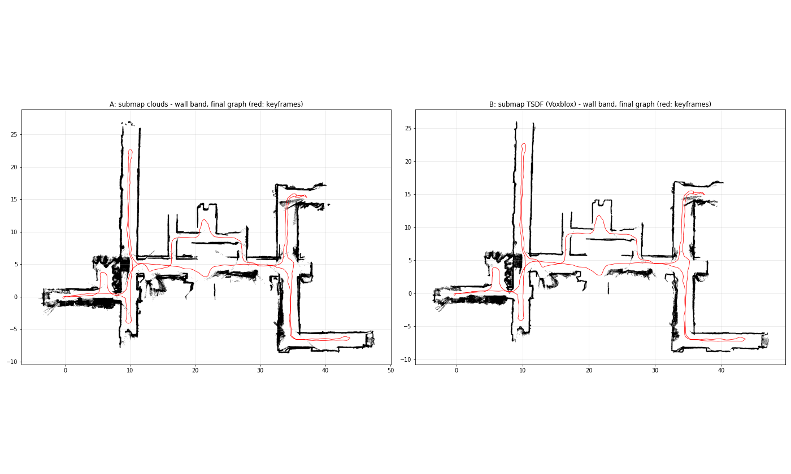
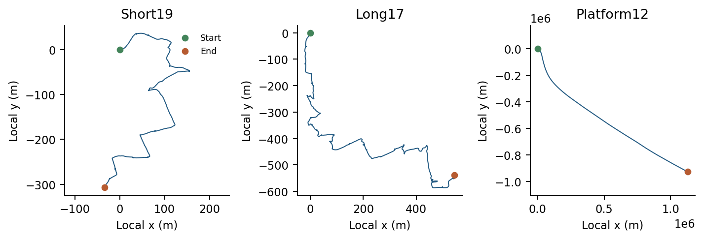
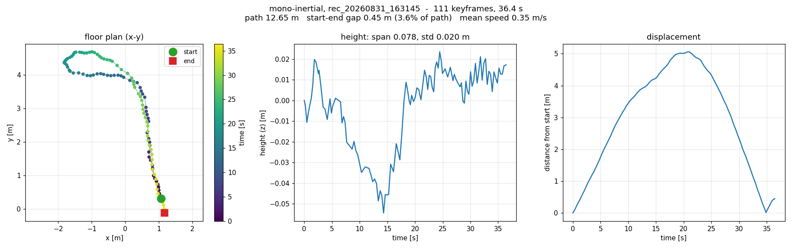

Overview
AnchorFlow-VIO is an open-source monocular visual-inertial odometry system based on Basalt. I evaluated it on the LaMAria benchmark, and it runs at 84 frames per second on a desktop CPU. I also built a stereo-inertial SLAM system for a small mobile robot with a Jetson Nano 4 GB. It has loop closure, dense mapping and relocalisation.
Videos and images




Details
AnchorFlow-VIO
AnchorFlow-VIO uses one grayscale camera and an IMU. It is derived from Basalt and tracks features with optical flow against a fixed template. On the LaMAria training recordings it produces a pose for all 265,694 images and runs at 84.6 frames per second on an Intel i7-10700. I submitted it to the public LaMAria benchmark in October 2026. The code is on GitHub under the MIT licence.
SLAM on a Jetson Nano
The SLAM system runs on a Jetson Nano 4 GB with a RealSense D455 on a Pioneer P3-DX robot. Visual-inertial odometry (OpenVINS or Basalt) gives the local motion. On top of it there is a GTSAM pose graph with outlier rejection, loop detection from appearance and from geometry, a dense TSDF map, and saving, loading and relocalisation in an old map. A web app shows the map and the camera while the robot moves.
Results
On a test loop in our building, odometry alone ended 1.47 m away from the start. With loop closure the error was 0.17 m. ORB-SLAM3 gave 0.14 to 0.17 m on the same data after histogram equalisation, and lost tracking five times on the raw images. On a sequence from the Kimera-Multi dataset the trajectory error was reduced from 8.0 m to 2.5 m. The pose graph update takes 85 to 220 ms on the Nano and the application uses about 0.5 GB of memory.
Optimisation on the Jetson
I profiled the pipeline on the Jetson Nano and reduced the tracking delay from 78 ms to 8 ms. The time to compute one depth cloud went from 2.4 s to about 1.4 s.
SLAM on a phone
As a separate experiment I ran ORB-SLAM3 in monocular-inertial mode on an Android phone. On a 12.65 m loop the end point was 0.45 m from the start (3.6%).
 Continual learning for manipulation
Continual learning for manipulation Custom quadruped robot
Custom quadruped robot Humanoid manipulation
Humanoid manipulation Hospital delivery and inspection robot
Hospital delivery and inspection robot